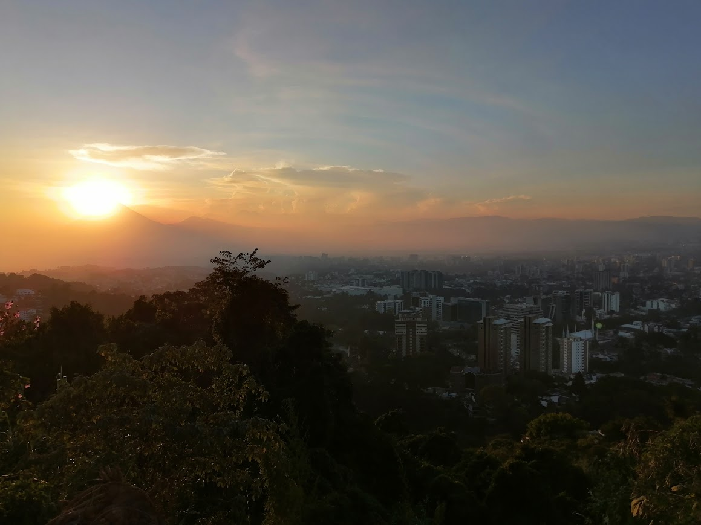
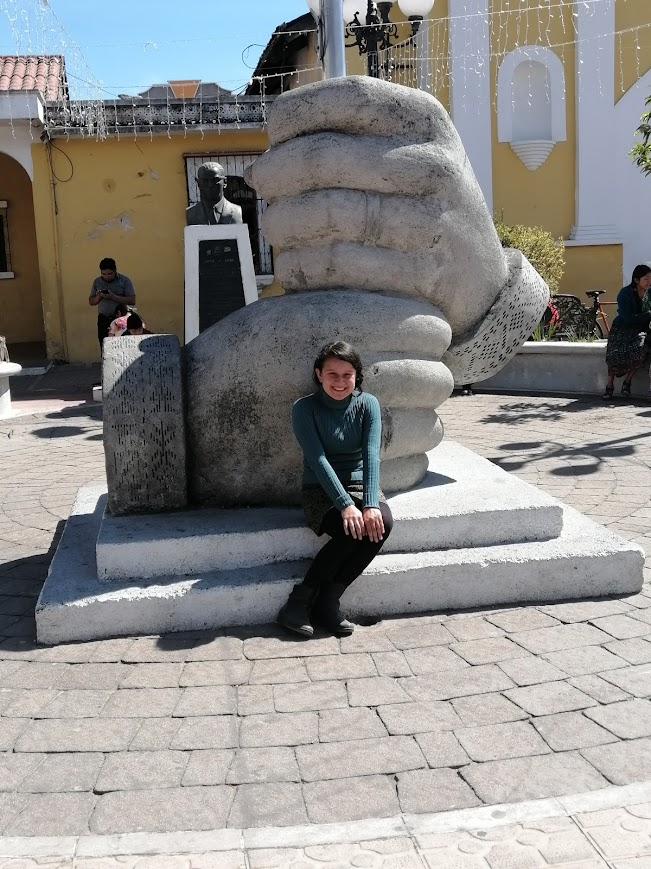
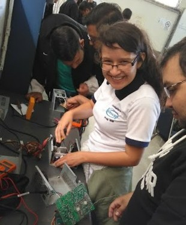

Nací el hospital San Juan de Dios en la ciudad capital en un clima lluvioso; un 29 de agosto de 1996, alrededor de las 11:00 am. El pasar de los años fue dulce tanto para mis abuelos paternos como mis abuelos maternos.
Mis abuelos me amaron ya que fui la primera nieta, las fiestas de cumpleaños eran momentos muy acogedores y conmovedores. No faltaban los niños que quisieran reventar la piñata y comer un dulce pastel.
Cada fiesta de cumpleaños compartíamos con amigos y vecinos, hasta que tuve la bonita noticia de que tendría una hermana menor. Aunque para mis adentros estaba celosa de mi nueva hermana. Con el pasar del tiempo, a pesar de que no me gustaba jugar con muñecas debía obligatoriamente que compartir unos juegos algo bruscos con mi hermana; ya que tenía la peculiaridad de ser mucho más fuerte que yo hasta el día de hoy físicamente hablando.
Soy una amante de los animales, desde niña tuve la responsabilidad de cuidar, amar y alimentar a las mascotas. Con el tiempo aprendí que cuidados darles a los perros, conejos, pollos, pericos, lagartijas, gatos, ratita blanca, hámster, peces, palomas y codornices. No todo fue color de rosas, mis padres al ser muy jovenes no tuvieron mucha madures para afrontar la crianza de dos niñas pequeñas por lo que mis abuelos se metieron en nuestro crecimiento.
En ese tiempo algo turbulento también vino a nuestra vida un hermanito más, a quien desee en aquel tiempo y a quien amo. Pero dado a mi forma de ser y el tiempo que para mí jugaba en contra, no disfrutaba otro tipo de juegos mas que de consolas oh la computadora. A pesar de las disputas entre ellos, la misericordia del Dios vivo al que creemos y su amor pudo hasta el día de hoy tener unida esta familia la cual, atesoro, amo y respeto. Mi papá Amado quien trabajó de mecánico me dio la hermosa herencia de la curiosidad y mi mamá Miriam a quien le debo la vida, la enseñanza diaria y a Dios quien permitió que viva en esta familia.
Recuerdo una pequeña anécdota con mis abuelos maternos, mi abuela era una fanática de “vitrinear” el cual después de ver los mostradores y los precios de los objetos que gustábamos, nos retirábamos a comer en un restaurante oh simplemente comer un helado mientras observamos pasar a las personas y charlas de los vecinos. Mi primaria fue una época curiosa donde descubrí el gusto por los niños y mi timidez era palpable; sin embargo, no dejaba pasar las temporadas donde disfrutábamos jugando al arrancacebolla, trompos, cincos, jugar con la cuerda y los famosos tazos coleccionables. Estudié en Fe y Alegría No. 9 en zona 7 donde pasé párvulos, primaria y básicos.
En básicos pase esa por la etapa de la mecanografía, en donde la era digital estaba cambiando al mundo y llego hasta donde estamos hoy en día. Mi maestra Nancy me aconsejo a como caminar en la vida y con Dios; fue un apoyo moral y emocional, en donde cada consejo me dejaba pensando en cómo afectaría oh ayudaría en mi vida cotidiana. En carrera los días era ajetreados y agotadores, a pesar de no trabajar aún estaba con la responsabilidad de cuidar a mi abuela paterna ya que la habían diagnosticado diabetes y no quería aceptar esa realidad tan dura.
Deje pasar dos años sin estudios ya que quería descansar de esa vida y me enfoque en mis abuelos paternos y sus cuidados. Disfrute con ellos desde que nací hasta sus últimos días de vida y llegue a la conclusión de que la vida a pesar de ser efímera tiene un propósito divino junto con sus altos y bajos. Aprendí con mis abuelos paternos y maternos a escuchar más opiniones, ser realista, no dejarme llevar de lo que dicen y crear un criterio. Mi abuelo Ramiro paterno tenía un dicho: “vivir no cuesta, saber vivir sí”, sigo pensando en ese dicho y entiendo algunas situaciones de la vida, pero aun no entiendo los demás ángulos de ese dicho. Tengo más experiencias por vivir, aprender y meditar; el cual me lleva siempre a la frase; “que necesito mejorar” ya no soy la misma joven de hace 10 años atrás y no lo digo solo porque envejezco, la vida tiene tantas lecciones, tantas situaciones diferentes que solo me pregunto si mis antepasados también vivieron lo mismo y si llegué a la misma conclusión que ellos oh si mi punto de vista es distinto. Medito en Dios y sigo preguntándome que tanto debo comprender para tomar más su ejemplo de amor, paz y respeto.
Mi meta a futuro es convertirme en una Ingeniera en sistemas, pero aun sigo curioseando las áreas para especializarme y trabajar un día de esto. Casi todas mis metas las he cumplido con el tiempo, pero tengo el deseo de tener una granja y vender los frutos que puedan darme. Siempre me ha gustado leer libros, informarme de política, jugar videojuegos, disfruto de la tranquilidad de una montaña disfrutando de la naturaleza, me gusta armar y desarmar cualquier aparato eléctrico como también saber cómo este hecho. Admiro a mi mamá Miriam que, a pesar de las dificultades de crianza las separaciones que tuvo con mi papá y los constantes desafíos financieros; su ejemplo de no rendirse ante la adversidad me sirvió hasta el día de hoy y agrego que tomar con humor la vida le da otra sazón.
A continuación dejo un video sobre la persona que admiro, el politólogo Agustin Lage y sus redes sociales:
Botón de enlace